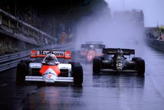
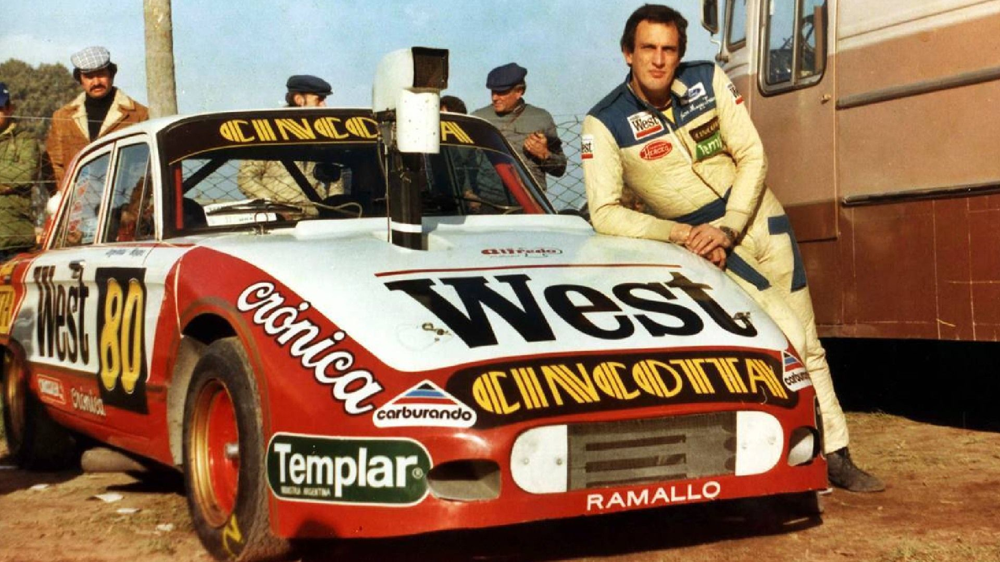
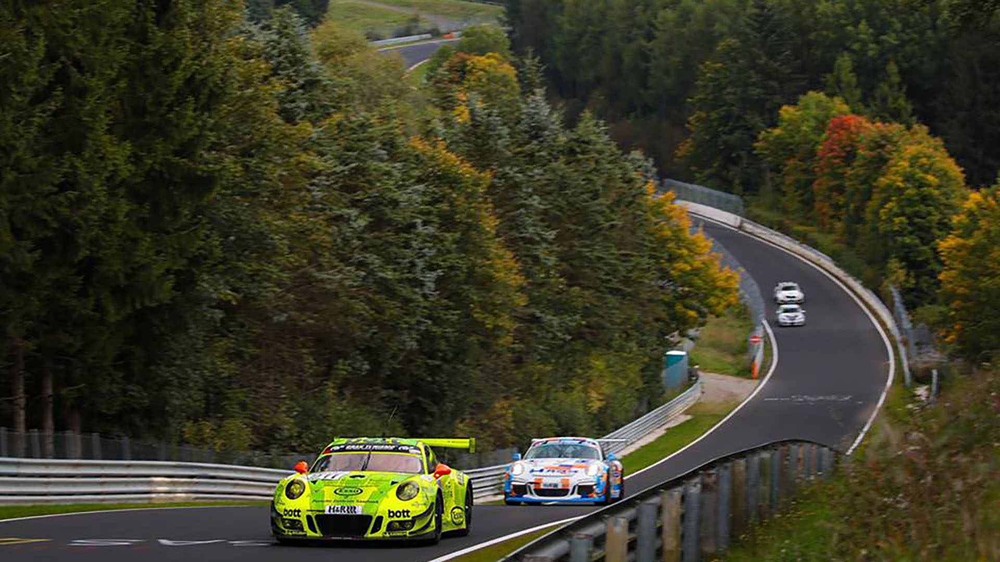
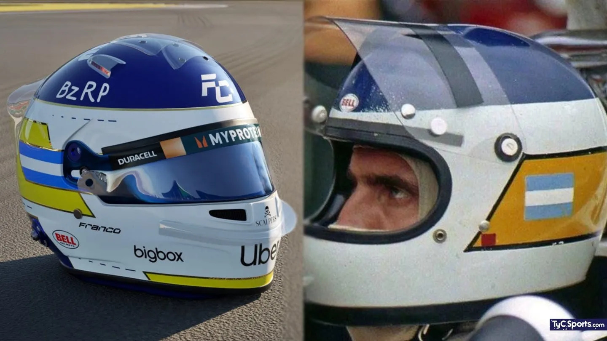

Historia
El automovilismo tiene memoria. Esta sección recorre los momentos, pilotos y circuitos que definieron el carácter del deporte motor.

Momentos legendarios
- Carreras épicas: Mónaco 1984, Le Mans 1966, TC en Buenos Aires.
- Hazañas técnicas: récords, remontadas, innovaciones.

Pilotos que marcaron época
- Juan Manuel Fangio: dominio y elegancia.
- Ayrton Senna: talento y mística.
- Juan María Traverso: carisma, agresividad y dominio.

Circuitos icónicos
- Mónaco: glamour y precisión.
- Nürburgring: desafío técnico.
- Rafaela: velocidad argentina.

Cultura Visual
- Cascos, liveries, branding de escuderías.
- Evolución estética del automovilismo.